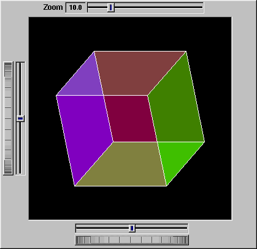
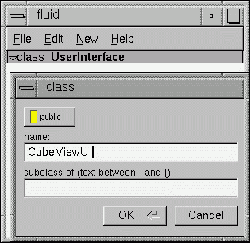
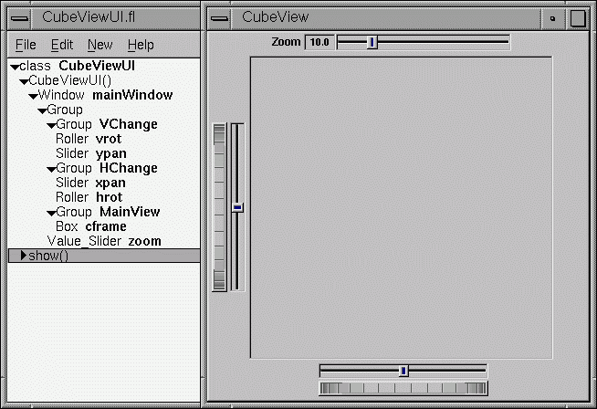
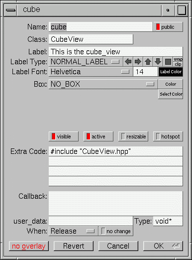
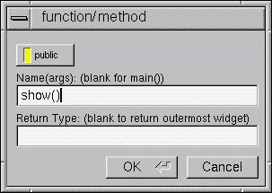
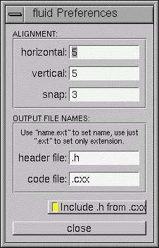
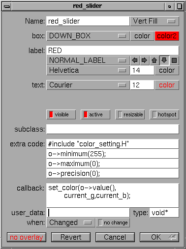
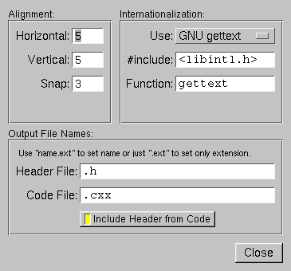
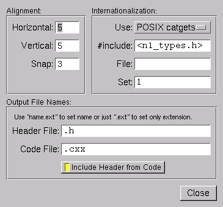

The Fast Light User Interface Designer, or FLUID, is a graphical editor that is used to produce FLTK source code.
FLUID edits and saves its state in .fl files. These files are text, and you can (with care) edit them in a text editor, perhaps to get some special effects.
FLUID can "compile" the .fl file into a .cxx and a .h file. The .cxx file defines all the objects from the .fl file and the .h file declares all the global ones.
FLUID also supports localization (Internationalization) of label strings using message files and the GNU gettext or POSIX catgets interfaces.
A simple program can be made by putting all your code (including a main() function) into the .fl file and thus making the .cxx file a single source file to compile. Most programs are more complex than this, so you write other .cxx files that call the FLUID functions. These .cxx files must #include the .h file or they can #include the .cxx file so it still appears to be a single source file.
Normally the FLUID file defines one or more functions or classes which output C++ code. Each function defines a one or more FLTK windows, and all the widgets that go inside those windows.
Widgets created by FLUID are either "named", "complex named" or "unnamed". A named widget has a legal C++ variable identifier as its name (i.e. only alphanumeric and underscore). In this case FLUID defines a global variable or class member that will point at the widget after the function defining it is called. A complex named object has punctuation such as '.' or '->' or any other symbols in its name. In this case FLUID assigns a pointer to the widget to the name, but does not attempt to declare it. This can be used to get the widgets into structures. An unnamed widget has a blank name and no pointer is stored.
Widgets may either call a named callback function that you write in another source file, or you can supply a small piece of C++ source and FLUID will write a private callback function into the .cxx file.
fluid filename.fl &to edit the .fl file filename.fl. If the file does not exist you will get an error pop-up, but if you dismiss it you will be editing a blank file of that name. You can run FLUID without any name, in which case you will be editing an unnamed blank setup (but you can use save-as to write it to a file).
You can provide any of the standard FLTK switches before the filename:
-display host:n.n -geometry WxH+X+Y -title windowtitle -name classname -iconic -fg color -bg color -bg2 colorChanging the colors may be useful to see what your interface will look at if the user calls it with the same switches.
In the current version, if you don't go into the background (with '&') then you will be able to abort FLUID by typing ^C on the terminal. It will exit immediately, losing any changes.
fluid -c filename.flThis will read the filename.fl file and write filename.cxx and filename.h. The directory will be stripped, so they are written to the current directory always. If there are any errors reading or writing the files it will print the error and exit with a non-zero code. In a makefile you can use a line like this:
my_panels.h my_panels.cxx: my_panels.fl fluid -c my_panels.flSome versions of make will accept rules like this to allow all .fl files found to be compiled:
.SUFFIXES: .fl .cxx .h .fl.h .fl.cxx: fluid -c $<

The window is of class CubeViewUI, and is completely generated by FLUID, including class member functions. The central display of the cube is a separate subclass of Fl_Gl_Window called CubeView. CubeViewUI manages CubeView using callbacks from the various sliders and rollers to manipulate the viewing angle and zoom of CubeView.
At the completion of this tutorial you will (hopefully) understand how to:
You can safely skip this section as long as you realize the CubeView is a sublass of Fl_Gl_Window and will respond to calls from CubeViewUI, generated by FLUID.
class CubeView : public Fl_Gl_Window {
public:
CubeView(int x,int y,int w,int h,const char *l=0);
// this value determines the scaling factor used to draw the cube.
double size;
/* Set the rotation about the vertical (y ) axis.
*
* This function is called by the horizontal roller in CubeViewUI
* and the initialize button in CubeViewUI.
*/
void v_angle(float angle){vAng=angle;};
// Return the rotation about the vertical (y ) axis.
float v_angle(){return vAng;};
/* Set the rotation about the horizontal (x ) axis.
*
* This function is called by the vertical roller in CubeViewUI
and the
* initialize button in CubeViewUI.
*/
void h_angle(float angle){hAng=angle;};
// the rotation about the horizontal (x ) axis.
float h_angle(){return hAng;};
/* Sets the x shift of the cube view camera.
*
* This function is called by the slider in CubeViewUI and the
* initialize button in CubeViewUI.
*/
void panx(float x){xshift=x;};
/* Sets the y shift of the cube view camera.
*
* This function is called by the slider in CubeViewUI and the
* initialize button in CubeViewUI.
*/
void pany(float y){yshift=y;};
/* The widget class draw() override.
* The draw() function initialize Gl for another round of
* drawing then calls specialized functions for drawing each
* of the entities displayed in the cube view.
*/
void draw();
private:
/* Draw the cube boundaries
* Draw the faces of the cube using the boxv[] vertices, using
* GL_LINE_LOOP for the faces. The color is #defined by
* CUBECOLOR.
*/
void drawCube();
float vAng,hAng; float xshift,yshift;
float boxv0[3];float boxv1[3]; float boxv2[3];float boxv3[3];
float boxv4[3];float boxv5[3]; float boxv6[3];float boxv7[3];
};
#include "CubeView.h"
#include <math.h>
CubeView::CubeView(int x,int y,int w,int h,const char *l)
: Fl_Gl_Window(x,y,w,h,l)
{
vAng = 0.0; hAng=0.0; size=10.0;
/* The cube definition. These are the vertices of a unit cube
* centered on the origin.*/
boxv0[0] = -0.5; boxv0[1] = -0.5; boxv0[2] = -0.5; boxv1[0] = 0.5;
boxv1[1] = -0.5; boxv1[2] = -0.5; boxv2[0] = 0.5; boxv2[1] = 0.5;
boxv2[2] = -0.5; boxv3[0] = -0.5; boxv3[1] = 0.5; boxv3[2] = -0.5;
boxv4[0] = -0.5; boxv4[1] = -0.5; boxv4[2] = 0.5; boxv5[0] = 0.5;
boxv5[1] = -0.5; boxv5[2] = 0.5; boxv6[0] = 0.5; boxv6[1] = 0.5;
boxv6[2] = 0.5; boxv7[0] = -0.5; boxv7[1] = 0.5; boxv7[2] = 0.5;
};
// The color used for the edges of the bounding cube.
#define CUBECOLOR 255,255,255,255
void CubeView::drawCube() {
/* Draw a colored cube */
#define ALPHA 0.5
glShadeModel(GL_FLAT);
glBegin(GL_QUADS);
glColor4f(0.0, 0.0, 1.0, ALPHA);
glVertex3fv(boxv0);
glVertex3fv(boxv1);
glVertex3fv(boxv2);
glVertex3fv(boxv3);
glColor4f(1.0, 1.0, 0.0, ALPHA);
glVertex3fv(boxv0);
glVertex3fv(boxv4);
glVertex3fv(boxv5);
glVertex3fv(boxv1);
glColor4f(0.0, 1.0, 1.0, ALPHA);
glVertex3fv(boxv2);
glVertex3fv(boxv6);
glVertex3fv(boxv7);
glVertex3fv(boxv3);
glColor4f(1.0, 0.0, 0.0, ALPHA);
glVertex3fv(boxv4);
glVertex3fv(boxv5);
glVertex3fv(boxv6);
glVertex3fv(boxv7);
glColor4f(1.0, 0.0, 1.0, ALPHA);
glVertex3fv(boxv0);
glVertex3fv(boxv3);
glVertex3fv(boxv7);
glVertex3fv(boxv4);
glColor4f(0.0, 1.0, 0.0, ALPHA);
glVertex3fv(boxv1);
glVertex3fv(boxv5);
glVertex3fv(boxv6);
glVertex3fv(boxv2);
glEnd();
glColor3f(1.0, 1.0, 1.0);
glBegin(GL_LINES);
glVertex3fv(boxv0);
glVertex3fv(boxv1);
glVertex3fv(boxv1);
glVertex3fv(boxv2);
glVertex3fv(boxv2);
glVertex3fv(boxv3);
glVertex3fv(boxv3);
glVertex3fv(boxv0);
glVertex3fv(boxv4);
glVertex3fv(boxv5);
glVertex3fv(boxv5);
glVertex3fv(boxv6);
glVertex3fv(boxv6);
glVertex3fv(boxv7);
glVertex3fv(boxv7);
glVertex3fv(boxv4);
glVertex3fv(boxv0);
glVertex3fv(boxv4);
glVertex3fv(boxv1);
glVertex3fv(boxv5);
glVertex3fv(boxv2);
glVertex3fv(boxv6);
glVertex3fv(boxv3);
glVertex3fv(boxv7);
glEnd();
};//drawCube
void CubeView::draw() {
if (!valid()) {
glLoadIdentity(); glViewport(0,0,w(),h());
glOrtho(-10,10,-10,10,-20000,10000); glEnable(GL_BLEND);
glBlendFunc(GL_SRC_ALPHA, GL_ONE_MINUS_SRC_ALPHA);
}
glClear(GL_COLOR_BUFFER_BIT | GL_DEPTH_BUFFER_BIT);
glPushMatrix(); glTranslatef(xshift, yshift, 0);
glRotatef(hAng,0,1,0); glRotatef(vAng,1,0,0);
glScalef(float(size),float(size),float(size)); drawCube();
glPopMatrix();
};

Then add a window to the CubeViewUI class. Highlight the name of the constructor in the FLUID browser window and click on New->Group->Window. In a similar manner add the following to the CubeViewUI constructor:
When you are finished you should have something like this:

We will talk about the show() method that is highlighted shortly.
The CubeView class inherits the Fl_Gl_Window class, which is created in the same way as a Fl_Box widget. Use New->Other->Box to add a square box to the main window. This will be no ordinary box, however.
The Box properties window will appear. The key to letting CubeViewUI display CubeView is to enter CubeView in the "Class:" text entry box. This tells FLUID that it is not an Fl_Box, but a similar widget with the same constructor. In the "Extra Code:" field enter #include "CubeView.h"
This #include is important, as we have just included CubeView as a member of CubeViewUI, so any public CubeView methods are now available to CubeViewUI.

cube->pany(((Fl_Slider *)o)->value()); cube->redraw();We call cube->redraw() after changing the value to update the CubeView window. CubeView could easily be modified to do this, but it is nice to keep this exposed in the case where you may want to do more than one view change only redrawing once saves a lot of time.
There is no reason no wait until after you have added CubeView to enter these callbacks. FLUID assumes you are smart enough not to refer to members or functions that don't exist.
Make sure the top level CubeViewUI is selected and select New->Code->Function/Method. Just use the name show(). We don't need a return value here, and since we will not be adding any widgets to this method FLUID will assign it a return type of void.

Once the new method has been added, highlight its name and select New->Code->Code. Enter the method's code in the code window.
At the bottom of the preferences dialog box is the key: "Include Header from Code". Select that option and set your desired file extensions and you are in business. You can include the CubeViewUI.h (or whatever extension you prefer) as you would any other C++ class.
The widgets are stored in a hierarchy. You can open and close a level by clicking the "triangle" at the left of a widget. The leftmost widgets are the parents, and all the widgets listed below them are their children. Parents don't have to have any children.
The top level of the hierarchy is composed of functions and classes. Each of these will produce a single C++ public function or class in the output .cxx file. Calling the function or instantiating the class will create all of the child widgets.
The second level of the hierarchy contains the windows. Each of these produces an instance of class Fl_Window.
Below that are either widgets (subclasses of Fl_Widget) or groups of widgets (including other groups). Plain groups are for layout, navigation, and resize purposes. Tab groups provide the well-known file-card tab interface.
Widgets are shown in the browser by either their name (such as "main_panel" in the example), or by their type and label (such as "Button "the green"").
You select widgets by clicking on their names, which highlights them (you can also select widgets from any displayed window). You can select many widgets by dragging the mouse across them, or by using Shift+Click to toggle them on and off. To select no widgets, click in the blank area under the last widget. Note that hidden children may be selected even when there is no visual indication of this.
You open widgets by double-clicking on them, or (to open several widgets you have picked) by typing the F1 key. A control panel will appear so you can change the widget(s).
The menu bar at the top is duplicated as a pop-up menu on any displayed window. The shortcuts for all the menu items work in any window. The menu items are:
FLUID can also read .fd files produced by the Forms and XForms "fdesign" programs. It is best to File/Merge them instead of opening them. FLUID does not understand everything in a .fd file, and will print a warning message on the controlling terminal for all data it does not understand. You will probably need to edit the resulting setup to fix these errors. Be careful not to save the file without changing the name, as FLUID will write over the .fd file with its own format, which fdesign cannot read!
The output file names are the same as the .fl file, with the leading directory and trailing ".fl" stripped, and ".h" or ".cxx" appended.
The output file name is the same as the .fl file, with the leading directory and trailing ".fl" stripped, and ".txt", ".po", or ".msg" appended depending on the Internationalization Mode.
If the widget is a window, it is added to whatever function is selected, or contained in the current selection.
If the widget is a normal widget, it is added to whatever window or group is selected. If none is, it is added to the window or group that is the parent of the current selection.
To avoid confusion, it is best to select exactly one widget before doing a paste.
Cut/paste is the only way to change the parent of a widget.
If they are all selected already then this selects all widgets in that group's parent. Repeatedly typing Alt+a will select larger and larger groups of widgets until everything is selected.

The output filenames control the extensions or names of the files the are generated by FLUID. If you check the "Include .h from .cxx" button the code file will include the header file automatically.
The internationalization options are described later in this chapter.
If the function contains any unnamed windows, it will be declared as returning a Fl_Window pointer. The unnamed window will be returned from it (more than one unnamed window is useless). If the function contains only named windows, it will be declared as returning nothing (void).
It is possible to make the .cxx output be a self-contained program that can be compiled and executed. This is done by deleting the function name so main(argc,argv) is used. The function will call show() on all the windows it creates and then call Fl::run(). This can also be used to test resize behavior or other parts of the user interface.
You can change the function name by double-clicking on the function.
The widget panel will also appear and is described later in this chapter.
When you create the widget you will get the widget's control panel, which is described later in this chapter.
When you change attributes using this panel, the changes are reflected immediately in the window. It is useful to hit the "no overlay" button (or type Alt+Shift+O) to hide the red overlay so you can see the widgets more accurately, especially when setting the box type.
If you have several widgets selected, they may have different values for the fields. In this case the value for one of the widgets is shown. But if you change this value, all of the selected widgets are changed to the new value.
Hitting "OK" makes the changes permanent. Selecting a different widget also makes the changes permanent. FLUID checks for simple syntax errors such as mismatched parenthesis in any code before saving any text.
"Revert" or "Cancel" put everything back to when you last brought up the panel or hit OK. However in the current version of FLUID, changes to "visible" attributes (such as the color, label, box) are not undone by revert or cancel. Changes to code like the callbacks are undone, however.
Widget AttributesName (text field)Name of a variable to declare, and to store a pointer to this widget into. This variable will be of type "<class>*". If the name is blank then no variable is created.You can name several widgets with "name[0]", "name[1]", "name[2]", etc. This will cause FLUID to declare an array of pointers. The array is big enough that the highest number found can be stored. All widgets that in the array must be the same type. Type (upper-right pulldown menu)Some classes have subtypes that modify their appearance or behavior. You pick the subtype off of this menu.Box (pulldown menu)The boxtype to draw as a background for the widget. |
 |
Many widgets will work, and draw faster, with a "frame" instead of a "box". A frame does not draw the colored interior, leaving whatever was already there visible. Be careful, as FLUID may draw this ok but the real program may leave unwanted stuff inside the widget.
If a window is filled with child widgets, you can speed up redrawing by changing the window's box type to "NO_BOX". FLUID will display a checkerboard for any areas that are not colored in by boxes. Note that this checkerboard is not drawn by the resulting program. Instead random garbage will be displayed.
The color to draw the box with.
Some widgets will use this color for certain parts. FLUID does not always show the result of this: this is the color buttons draw in when pushed down, and the color of input fields when they have the focus.
You can put newlines into the string to make multiple lines. The easiest way is by typing Ctrl+j.
From this menu you can also pick "Image...". This lets you use the contents of a GIF, XPM, or XBM image file to label the widget.
Only one child can be resizable. Turning this on turns it off for the other children.
You can get more complex behavior by making invisible boxes the resizable widget, or by using hierarchies of groups. Unfortunately the only way to test it is to compile the program. Resizing the FLUID window is not the same as what will happen in the user program.
In addition, no #include header file is put in the .h file. You must provide a #include line as the first line of the "Extra Code" which declares your subclass.
The class must be similar to the class you are spoofing. It does not have to be a subclass. It is sometimes useful to change this to another FLTK class. Currently the only way to get a double-buffered window is to change this field for the window to "Fl_Double_Window" and to add "#include <FL/Fl_Double_Window.h>" to the extra code.
If the text starts with a # or the word extern then FLUID thinks this is an "include" line, and it is written to the .h file. If the same include line occurs several times then only one copy is written.
All other lines are "code" lines. The current widget is pointed to by the local variable o. The window being constructed is pointed to by the local variable w. You can also access any arguments passed to the function here, and any named widgets that are before this one.
FLUID will check for matching parenthesis, braces, and quotes, but does not do much other error checking. Be careful here, as it may be hard to figure out what widget is producing an error in the compiler. If you need more than four lines you probably should call a function in your own .cxx code.
A name names a function in your own code. It must be declared as void name(<class>*,void*).
A code snippet is inserted into a static function in the .cxx output file. The function prototype is void name(class *o, void *v) so that you can refer to the widget as o and the user_data() as v. FLUID will check for matching parenthesis, braces, and quotes, but does not do much other error checking. Be careful here, as it may be hard to figure out what widget is producing an error in the compiler.
If the callback is blank then no callback is set.
There are other rare but useful values for the when() field that are not in the menu. You should use the extra code fields to put these values in.
To select a widget, click it. To select several widgets drag a rectangle around them. Holding down shift will toggle the selection of the widgets instead.
You cannot pick hidden widgets. You also cannot choose some widgets if they are completely overlapped by later widgets. Use the browser to select these widgets.
The selected widgets are shown with a red "overlay" line around them. You can move the widgets by dragging this box. Or you can resize them by dragging the outer edges and corners. Hold down the Alt key while dragging the mouse to defeat the snap-to-grid effect for fine positioning.
If there is a tab box displayed you can change which child is visible by clicking on the file tabs. The child you pick is selected.
The arrow, tab, and shift+tab keys "navigate" the selection. Left, right, tab, or shift+tab move to the next or previous widgets in the hierarchy. Hit the right arrow enough and you will select every widget in the window. Up/down widgets move to the previous/next widgets that overlap horizontally. If the navigation does not seem to work you probably need to "Sort" the widgets. This is important if you have input fields, as FLTK uses the same rules when using arrow keys to move between input fields.
To "open" a widget, double click it. To open several widgets select them and then type F1 or pick "Edit/Open" off the pop-up menu.
Type Alt+o to temporarily toggle the overlay off without changing the selection, so you can see the widget borders.
You can resize the window by using the window manager border controls. FLTK will attempt to round the window size to the nearest multiple of the grid size and makes it big enough to contain all the widgets (it does this using illegal X methods, so it is possible it will barf with some window managers!). Notice that the actual window in your program may not be resizable, and if it is, the effect on child widgets may be different.
The panel for the window (which you get by double-clicking it) is almost identical to the panel for any other Fl_Widget. There are three extra items:
Selecting "Image..." off the label style pull-down menu will bring up a file chooser from which you pick the image file. If an image has already been chosen, you can change the image used by picking "Image..." again. The name of the image will appear in the "label" field, but you can't edit it.
The contents of the image file are written to the .cxx file, so if you wish to distribute the C code, you only need to copy the .cxx file, not the images. If many widgets share the same image then only one copy is written.
However the file name is stored in the .fl file, so to read the .fl file you need the image files as well. Filenames are relative to the location the .fl file is (not necessarily the current directory). I recommend you either put the images in the same directory as the .fl file, or use absolute path names.
All widgets with the same image on them share the same code and source X pixmap. Thus once you have put an image on a widget, it is nearly free to put the same image on many other widgets.
If you are using a painting program to edit an image: the only way to convince FLUID to read the image file again is to remove the image from all widgets that are using it (including ones in closed windows), which will cause it to free its internal copy, and then set the image again. You may find it easier to exit FLUID and run it again.
Don't rely on how FLTK crops images that are outside the widget, as this may change in future versions! The cropping of inside labels will probably be unchanged.
To more accurately place images, make a new "box" widget and put the image in that as the label. This is also how you can put both an image and text label on the same widget. If your widget is a button, and you want the image inside it, you must change the button's boxtype to FL_UP_FRAME (or another frame), otherwise when it is pushed it will erase the image.
FLUID will output code to construct an Fl_Bitmap widget and use it to label the widget. The '1' bits in the bitmap are drawn using the label color of the widget. You can change the color in FLUID. The '0' bits are transparent.
The program "bitmap" on the X distribution does an ok job of editing bitmaps.
FLUID will output code to construct an Fl_Pixmap widget and use it to label the widget. The label color of the widget is ignored, even for 2-color images that could be a bitmap.
XPM files can mark a single color as being transparent. Currently FLTK and FLUID simulate this transparency rather badly. It will use the color() of the widget as the background, and all widgets using the same pixmap are assummed to have the same color. This may be fixed in the future or on non-X systems.
I have not found any good editors for small iconic pictures. For pixmaps I have used XPaint. This (and most other) painting programs are designed for large full color images and are difficult to use to edit an image of small size and few colors.
FLUID converts these into (modified) XPM format and uses an Fl_Pixmap widget to label the widget. Transparency is handled the same as for xpm files. Notice that the conversion removes the compression, so the code may be much bigger than the .gif file. Only the first image of an animated gif file is used.
Behavior and performance with large .gif files is not guaranteed!
FLUID supports internationalization (I18N for short) of label strings used by widgets. The preferences window (Alt+p) provides access to the I18N options.
FLUID supports three methods of I18N: use none, use GNU gettext, and use POSIX catgets. The "use none" method is the default and just passes the label strings as-is to the widget constructors.
The "GNU gettext" method uses GNU gettext (or a similar text-based I18N library) to retrieve a localized string before calling the widget constructor.
The "POSIX catgets" method uses the POSIX catgets function to retrieve a numbered message from a message catalog before calling the widget constructor.
FLUID's code support for GNU gettext is limited to calling a function or macro to retrieve the localized label; you still need to call setlocale() and textdomain() or bindtextdomain() to select the appropriate language and message file.
To use GNU gettext for I18N, open the preferences window and choose "GNU gettext" from the "Use" chooser. Two new input fields will then appear to control the include file and function/macro name to use when retrieving the localized label strings.

The "#include" field controls the header file to include for I18N; by default this is <libintl.h>, the standard I18N file for GNU gettext.
The "Function" field controls the function (or macro) that will retrieve the localized message; by default the gettext function will be called.
FLUID's code support for POSIX catgets allows you to use a global message file for all interfaces or a file specific to each .fl file; you still need to call setlocale() to select the appropriate language.
To use POSIX catgets for I18N, open the preferences window and choose "POSIX catgets" from the "Use" chooser. Three new input fields will then appear to control the include file, catalog file, and set number for retrieving the localized label strings.

The "#include" field controls the header file to include for I18N; by default this is <nl_types.h>, the standard I18N file for POSIX catgets.
The "File" field controls the name of the catalog file variable to use when retrieving localized messages; by default the file field is empty which forces a local (static) catalog file to be used for all of the windows defined in your .fl file.
The "Set" field controls the set number in the catalog file. The default set is 1 and rarely needs to be changed.